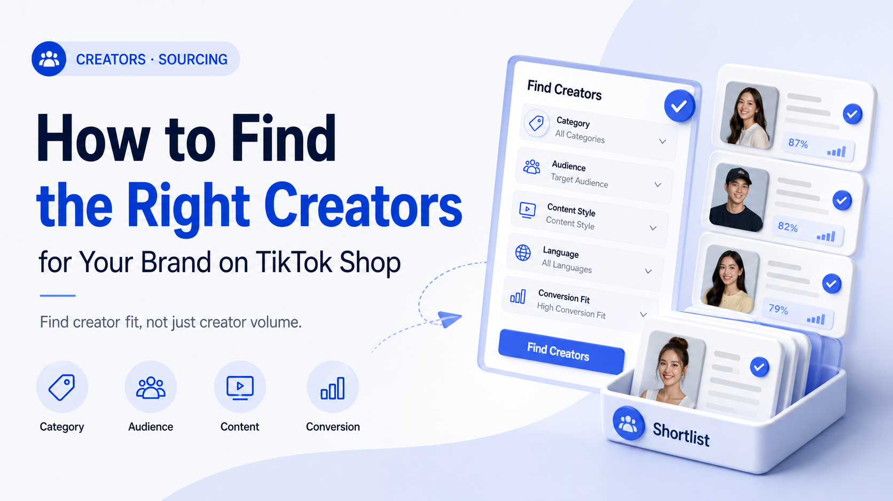

WE Marketing · WEM Blog
How to Find the Right Creators for Your Brand on TikTok Shop

Finding TikTok Shop creators isn't hard. Finding ones that actually convert is. Here's the framework we use to match brands with 8,000+ vetted creators.
- TikTok Shop agency strategy
- Creator affiliate and UGC operations
- Product page, content, and conversion guidance
WE Marketing / WEM 发布 TikTok Shop 代运营、达人联盟、UGC、直播和商品页转化相关实战内容。
Back to WE Marketing blog